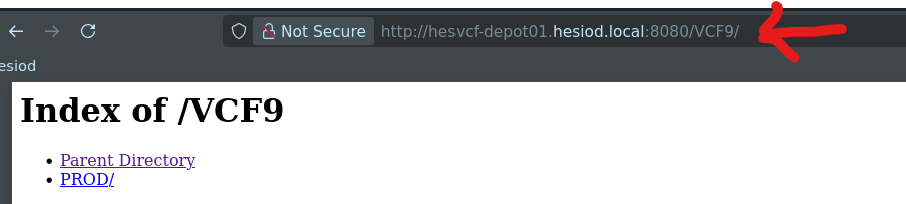

Once the VCF9 binaries have been uploaded to the appropriate folders, use the VCF9 installer to connect to an Offline Depot:

For detailed instructions, please see https://github.com/boconnor2017/hesiod-vcf9
Use the folder structure on the PhotonOS appliance to upload VCF9 binaries.
Once the VCF9 binaries have been uploaded to the appropriate folders, use the VCF9 installer to connect to an Offline Depot:
For detailed instructions, please see https://github.com/boconnor2017/hesiod-vcf9
To view your repository, add /VCF9 to to the URL in your browser. For example:
